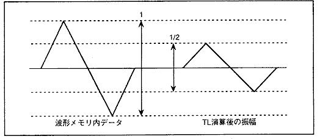

★HARDWARE Manual
★SCSPユーザーズマニュアル
★HARDWARE Manual
★SCSPユーザーズマニュアル
- 48 - 24 - 12 - 6 - 3 - 1.5 - 0.8 - 0.4 = -95.7[dB]
TL bit | bit 7 | bit 6 | bit 5 |
bit 4 | bit 3 | bit 2 | bit 1 | bit 0 |
TL減衰量 | -48 | -24 | -12 | -6 | -3 | -1.5 | -0.8 | -0.4 |
振幅比 | 1/256 | 1/16 | 1/4 | 1/2 | 1/√2 | 1/4√2 | 1/8√2 | 1/16√2 |
実数比(倍) | 0.00391 | 0.06250 | 0.25000 | 0.50000 | 0.70711 | 0.84090 | 0.91700 | 0.95760 |
図4.44 TLのbit4=1時のウェーブデータ

★HARDWARE Manual
★SCSPユーザーズマニュアル